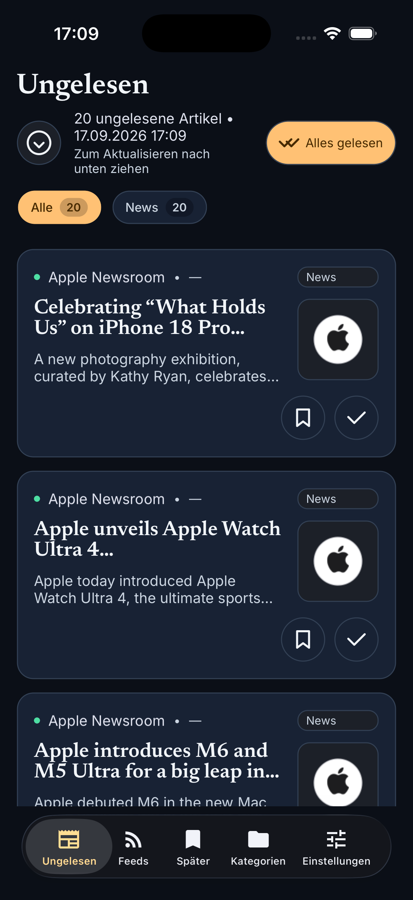
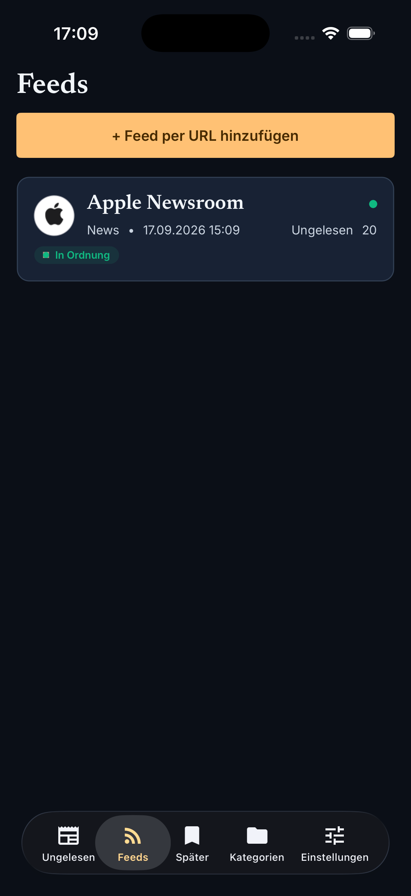
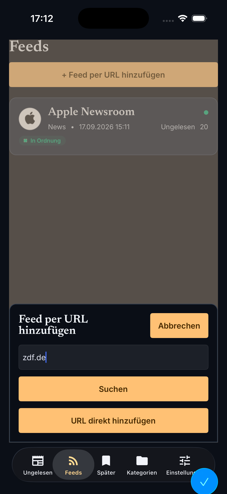
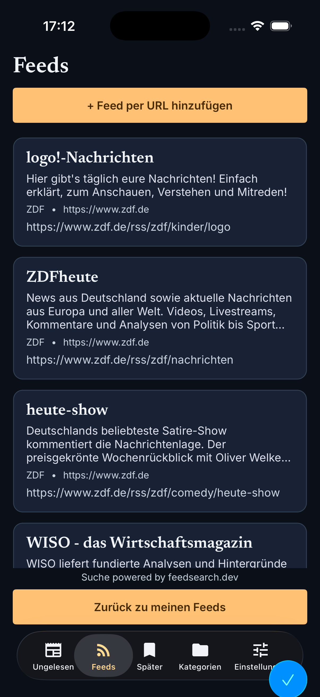
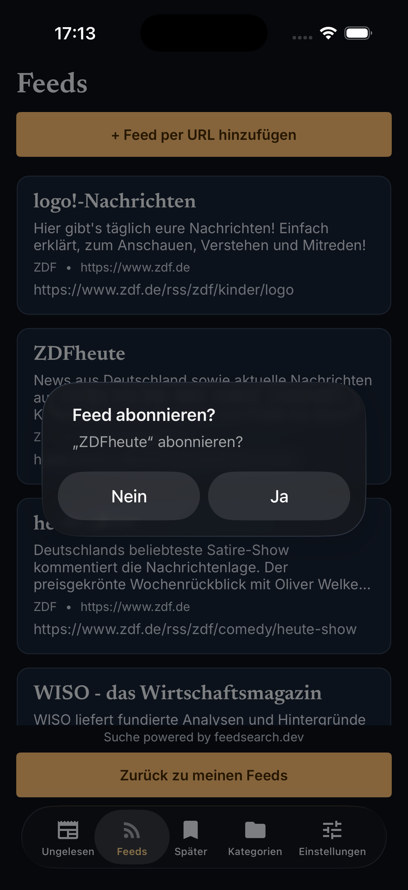
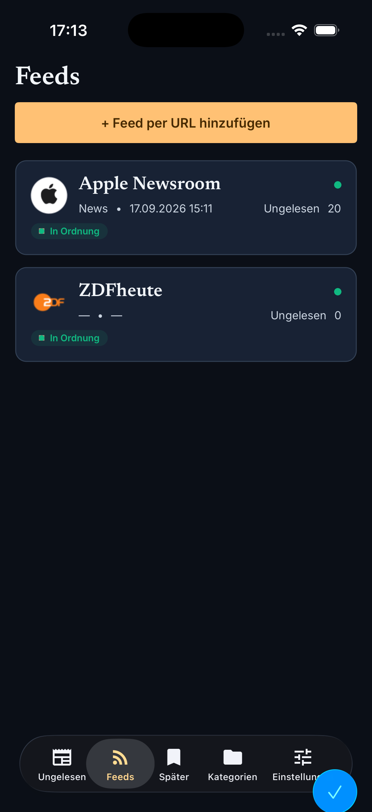
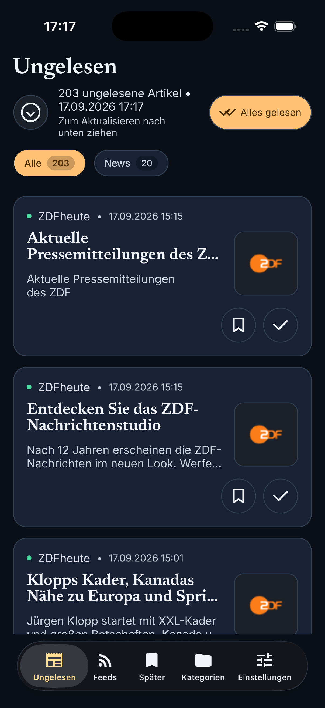

Press Kit
Material für Berichte über Reporter: App-Icon und Logo-Quellen, iOS-Screenshots sowie frei verwendbare Beschreibungstexte. Alle Dateien liegen direkt auf dieser Website zum Herunterladen.
Logo & App-Icon
-
App-Icon (komponiert)
Vektor-Master, Hintergrund #1e293b mit Badge
appicon.svg -
Badge / Symbol
weißes Badge mit RSS-Signalbögen, transparent
appiconfg.svg -
Splash mit Wortmarke
Badge plus „Reporter“-Schriftzug
splash.svg - App-Icon als PNG


Screenshots (iOS)


PNG


PNG


PNG


PNG


PNG


PNG


PNG
Animierte Demo (GIF):
app-demo-ios.gif

Beschreibungstexte
Kurztext
Reporter ist ein lokaler RSS-/Atom-Feed-Reader als .NET-MAUI-App für iOS (derzeit nur iPhone): Feeds abonnieren, Artikel lesen, Beiträge für später merken — ohne eigenes Backend, ohne Benutzerkonto, ohne Tracking und ohne Werbung.
Langtext
Reporter bietet einen zentralen Ort, um RSS- und Atom-Feeds zu abonnieren, Artikel zu lesen und Beiträge für später zu merken. Die App folgt dem System-Design (Light/Dark) und unterstützt Deutsch und Englisch — wahlweise entsprechend der Systemsprache oder über eine manuelle Sprachauswahl in den Einstellungen. Bereits synchronisierte Artikeltexte bleiben auch ohne Internetverbindung lesbar.
Fünf Tabs strukturieren die App: „Ungelesen“ zeigt neue Artikel mit Kategoriefilter, „Feeds“ verwaltet die Abonnements samt Gesundheitsstatus, „Später“ sammelt gemerkte Beiträge, „Kategorien“ organisiert die Feeds, und „Einstellungen“ bündelt Aufbewahrungsdauer, Keyword-Filter, Hintergrund-Aktualisierung, Benachrichtigungen mit Ruhezeiten, Farbschema und Sprache.
Reporter kommt ohne eigenes Backend und ohne Benutzerkonto aus: Alle Daten liegen in lokalen SQLite-Datenbanken auf dem Gerät; unter iOS sind die Nutzerdaten im iCloud-Backup enthalten. Die App erhebt keine Telemetrie, enthält kein Tracking, keine Analyse-SDKs und keine Werbung.
Presse-Kontakt
Bei Fragen rund um Reporter wende dich an mstromberg84+reporter@gmail.com (Martin Stromberg). Quellcode, Releases und weitere Informationen findest du im GitHub-Repository.
Hinweis für Redaktionen: Reporter wird von Martin Stromberg entwickelt — mit KI-Unterstützung (Devin, Cognition) bei Implementierung und Dokumentation.